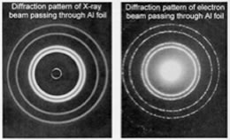

| Chapter 2.4: Beyond
Bohr |
|
On considering what was missing from Bohr’s model, scientists came back to the idea of wave-particle duality, as exemplified by the photon. If light (that is, electromagnetic radiation), which was classically considered as a wave, could have the properties of a particle, then perhaps matter, classically considered as composed of particles, might have the properties of waves, at least under conditions such as those that exist within an atom. This totally counterintuitive idea was considered by Louis De Broglie (1892 – 1987) in his Ph.D. thesis. De Broglie used Planck’s relationship between energy and frequency (E = hν), the relationship between frequency and wavelength (c = λν), and Einstein’s relationship between energy and mass (E = mc2) to derive a relationship between the mass and wavelength for any particle (including photons). You can do this yourself by substituting into these equations – and you will come up with λ = h/mv, where mv is the momentum of a particle with mass m and velocity v. In the case of photons, v = c, the velocity of light. |
2.1 Electrons & Orbitals |
If the math involved in deriving the relationship between a particle’s momentum (mv) and its wavelength λ is simple, the ideas behind it most certainly are not. It is even more difficult to conceptualize the idea that particles (such as ourselves) can behave like waves - and yet it is consistent with a broad range of observations. We would never notice the wavelike properties of matter because on the macroscopic scale, the wavelength associated with a particular particle will be negligible. For example the wavelength of a baseball moving at 100 m/s is much smaller than the baseball itself (can you calculate it?) |
| At the atomic scale, however, the wavelength associated with particles are similar to their size, meaning that the wave nature of particles, such as electrons, cannot be ignored; their behavior simply cannot be described accurately by models and equations that treat them as simple particles. This is illustrated by the fact that a beam of electrons can undergo diffraction, a wave-like behavior. |  |
Certainty and uncertainty: This idea was first explicitly put forward by Werner Heisenberg, and is known as the Heisenberg Uncertainty Principle. According to the uncertainty principle, we can estimate the uncertainty in a measurement using the formula Δmv times Δx > h/4π, where Δmv is the uncertainty in the momentum of the particle (mass times velocity or where it is going and how fast) and Δx is the uncertainty in its position in space (where it is at a particular moment). If we know exactly where the particle is (that is Δx = 0) then we have absolutely no information about its velocity, we do not know how fast or in what direction it is going. Alternatively, if we know its momentum exactly, that is Δmv = 0 (that is exactly how fast and in which direction it is going), we have no idea whatsoever where it is! The end result is that we cannot know, even in theory, exactly where an electron is without losing information on its momentum. This has lots of strange implications. If the electron were known to be within the nucleus (Δx ~1.5 x 10-14 m) we will have very little idea of its momentum (how fast and where it was going). This turns out to be a key feature of atomic level systems – there are inherent uncertainties in the properties of these systems. For example we can estimate some properties very accurately, but we cannot know everything about an atomic-molecular-level system at one time. This is a very different perspective from the one it replaced, which was famously summed up by Pierre-Simon Laplace (1749-1827) who stated that if the positions and velocities of every object in the universe were known, the future would be set. |
It turns out that a major flaw in Bohr’s model of the atom was that he attempted to define both the position of an electron (a defined orbit) and its energy (or at least the energy difference between orbits) at the same time. While such a goal seems quite reasonable, and would be possible at the macroscopic level, it simply does not make sense at the atomic level. The wave nature of the electron makes it impossible to predict exactly where that electron will be if we also know its energy level (and we do know the energies of electrons very accurately because of the evidence from spectroscopy) – we will consider this point again in this chapter. |
2.1
Electrons & Orbitals |
Question to answer:
Questions to ponder:
|
| 27-Jun-2012 |